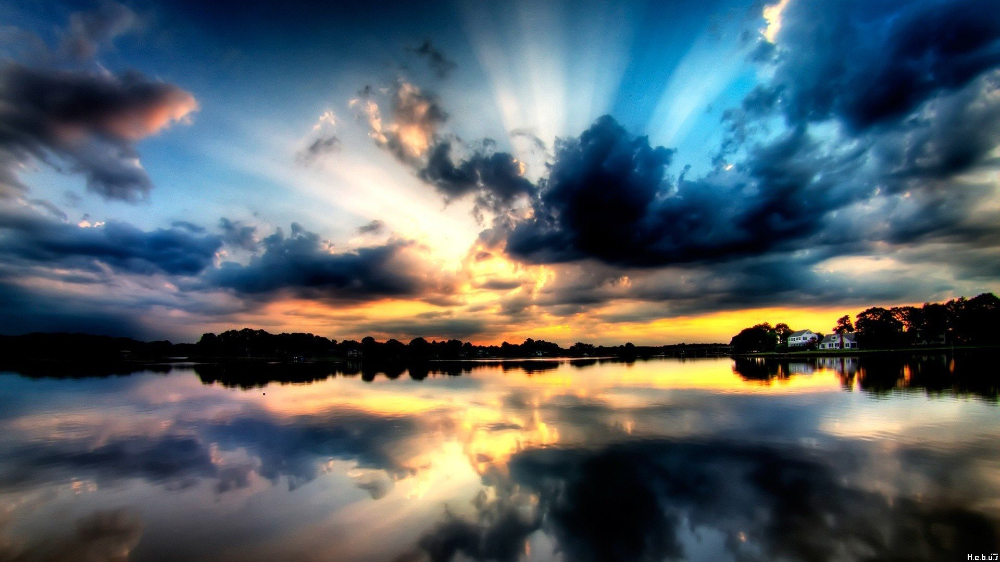

Bellezas de México
México tiene muchas bellezas, tan es así, que se creó el concurso llamado "Trece Maravillas de México" donde destaca:
- El Nevado de Toluca, Estado de México
- La Barranca del Cobre, Chihuahua.
- Las Cascadas de Agua Azul, Chiapas
- Zona arqueológica de Teotihuacan
- Zona arqueológica de Monte Albán
Entre muchisimas más

Londres
Se caracteriza por sus hermosos parques, los cuales cuidan mucho en ese pais, quedarías sorprendido de tanta belleza.
Te menciono algunas de ellas:
- Hyde Park
- St. James's Park
- Jardines de Kensington

Mundo
Al igual que estos paises, en el mundo tenemos muchísimas bellezas, tan es así, que se creó un concurso llamado "Las siete maravillas naturales", te menciono algunas de ellas.
- Bahía de Ha Long (Vietnam)
- Isla de Komodo (Indonesia)
- Río subterráneo de Puerto Princesa (Filipinas)
- Montaña de la Mesa (Sudáfrica)
- Cataratas del Iguazú (Argentina y Brasil)